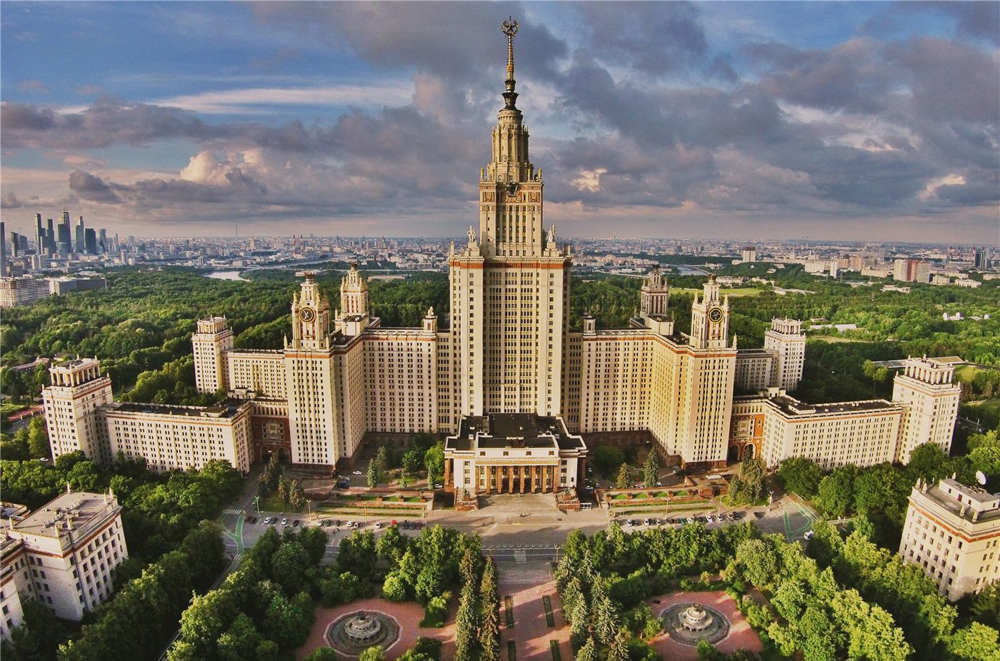

橋중국
중국중국, EU에 '자유무역·대화' 강조… 통상 협력 의지
중국 외교부, EU와의 경제·통상 관계는 상호이익이라며 보호무역 자제 촉구.
중국 외교부, EU와의 경제·통상 관계는 상호이익이라며 보호무역 자제 촉구.
왕이 외교부장, 글로벌 거버넌스 개혁 방향 제시. 중국, 7월 세계 AI 회의 개최 예정.

상무부 집계, 서비스 교역 확대 지속. 디지털·관광·운송이 견인.

수출 증가폭이 둔화되며 흑자가 축소됐다. 대외 수요 약화 신호로 읽힌다.

人民網에 따르면 6월 중순 중국 전역에서 '삼하(三夏)' 밀 수확이 마무리 국면에 접어들었다. 남에서 북으로 콤바인이 줄지어 이동하며, 비가 잦은 강남 지역에서도 무한궤도형 수확기와 이동식 건조기로 손실을 줄였다. 안정적 식량 확보는 물가와 직결되는 민생 현안이다.

環球網은 조선용 철강(선용 강재) 주문이 밀려 생산 라인이 가득 찼다고 전했다. 세계 신규 선박 수주의 상당 부분을 흡수한 중국 조선업의 호황이, 후판을 대는 철강업으로 파급되는 모습이다.

環球網은 문화·관광 분야 새 랜드마크가 천년의 둔황(敦煌)에 새로운 풍취를 더하고 있다고 전했다. 모가오굴로 상징되는 실크로드 문화 도시가 여름 성수기를 앞두고 디지털·체험형 시설로 관람객을 맞는다.

環球網은 중국의 해양 생태 보호·복원 사업이 새로운 성과를 거뒀다고 전했다. 남중국해 산호 복원이 이어지고 희귀 해양생물이 자주 모습을 드러내는 등, 연안 생태의 질이 개선되고 있다는 평가다.
環球網은 룽먼(龍門) 석굴의 디지털 복원과 인공지능(AI)을 활용한 비단 무늬 재현 등, 기술이 문화재를 '보고 느낄 수 있게' 만들고 있다고 전했다. 천년의 석굴이 데이터로 되살아나는 셈이다.

環球網은 글로벌 거버넌스에서 중국의 주도적 역할과 다자주의를 견지하는 공동의 목소리에 각국이 적극 호응하고 있다고 전했다. 중국의 관련 제안이 국제사회의 반향을 얻고 있다는 평가다.

環球網은 러시아 외교부가 '중러 교육의 해(中俄教育年)'를 두고 양국 국민의 상호 이해를 위한 새로운 기회를 만든다고 평가했다고 전했다. 인문 교류가 양국 관계의 토대로 부각되는 흐름이다.

環球網은 필리핀 당국에 구금됐던 중국 공민 64명이 석방됐다고 전했다. 주필리핀 중국대사관이 사안을 중시해 여러 차례 교섭한 끝에, 다수 혐의에 대한 증거 불충분으로 풀려났다는 것이다.
環球網은 여러 나라에서 '국제 중국어의 날'을 체험한 칠레 청년이 "모든 한자에 이야기가 담겨 있다"고 말했다고 전했다. 중국어가 세계 곳곳에서 문화 교류의 매개로 자리 잡는 흐름이다.
環球網에 따르면 중국 각지가 홍수 대비 '안전망'을 촘촘히 짜고 있다. 중앙기상대가 폭우·강대류 경보를 잇따라 발령한 가운데, 여름철 방재 체계가 본격 가동에 들어갔다.